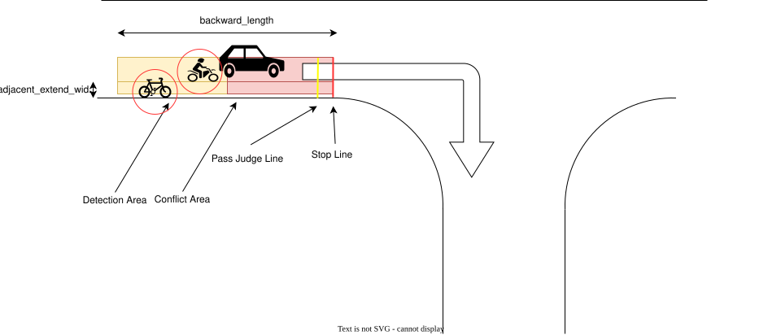

Index
Blind Spot#
Role#
Blind spot module checks possible collisions with bicycles and pedestrians running on its left/right side while turing left/right before junctions.

Activation Timing#
This function is activated when the lane id of the target path has an intersection label (i.e. the turn_direction attribute is left or right).
Inner-workings / Algorithms#
Sets a stop line, a pass judge line, a detection area and conflict area based on a map information and a self position.
- Stop line : Automatically created based on crossing lane information.
- Pass judge line : A position to judge if stop or not to avoid a rapid brake.
- Detection area : Right/left side area of the self position.
- Conflict area : Right/left side area from the self position to the stop line.
Stop/Go state: When both conditions are met for any of each object, this module state is transited to the "stop" state and insert zero velocity to stop the vehicle.
- Object is on the detection area
- Object’s predicted path is on the conflict area
In order to avoid a rapid stop, the “stop” judgement is not executed after the judgment line is passed.
Once a "stop" is judged, it will not transit to the "go" state until the "go" judgment continues for a certain period in order to prevent chattering of the state (e.g. 2 seconds).
Module Parameters#
| Parameter | Type | Description |
|---|---|---|
stop_line_margin |
double | [m] a margin that the vehicle tries to stop before stop_line |
backward_length |
double | [m] distance from closest path point to the edge of beginning point. |
ignore_width_from_center_line |
double | [m] ignore threshold that vehicle behind is collide with ego vehicle or not |
max_future_movement_time |
double | [s] maximum time for considering future movement of object |
adjacent_extend_width |
double | [m] if adjacent lane e.g. bicycle only lane exists, blind_spot area is expanded by this length |
Flowchart#
![uml diagram]()